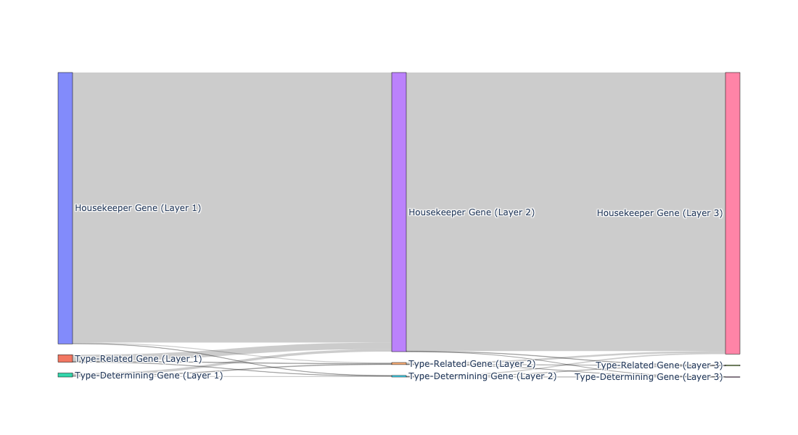

Gene Analysis Through Different Layer
This dataset contains 4,714 cells from the Red Nucleus region of the human midbrain, as part of the Human Brain Cell Atlas. For more details, refer to the description. It is available for free download in h5ad format from the CELLxGENE website via this link: Download Link.
Retrieve the hierarchical structure of the data
import requests
import anndata
import CellScope
from scipy.sparse import issparse
url = "https://datasets.cellxgene.cziscience.com/5488ff72-58ed-4f0d-913c-1b6d4d8412b1.h5ad"
file_path = "Siletti-1.h5ad"
response = requests.get(url, stream=True)
if response.status_code == 200:
with open(file_path, "wb") as f:
for chunk in response.iter_content(chunk_size=8192):
f.write(chunk)
adata = anndata.read_h5ad("Siletti-1.h5ad")
fea_raw = adata.X
cell_types = adata.obs['cell_type']
label = np.array(cell_types)
fea_raw,fea_log,fea = CellScope.cs.Normalization(fea_raw)
fea_Fitting_1, Signal_Space, Center_index = CellScope.cs.Manifold_Fitting_1(fea)
if issparse(fea_Fitting_1):
fea_Fitting_1 = fea_Fitting_1.toarray()
fea_Fitting_2, fitting_index, index_after_outlier_removal = CellScope.cs.Manifold_Fitting_2(fea_Fitting_1)
T_all_1 = CellScope.cs.GraphCluster(fea_Fitting_1)
T_all_2 = CellScope.cs.GraphCluster(fea_Fitting_2)
Y_initial, label_step0, Y_1, Title_1, Y_all, Title_all, index_1, index_all, step0, step1 = CellScope.ts.generate_tree_structured(fea_Fitting_1, T_all_1, step0 = None, step1 = 8)
CellScope.ts.tree_structure_visualization_static(T_all_1,step0,step1,Title_1,Title_all,Y_initial,Y_1,Y_all,index_1,index_all)
Define the hierarchical structure to be considered
The considered hierarchical structure is: from Cluster 3 to Cluster 3-1 and Cluster 3-2, then to Cluster 3-2-1 and Cluster 3-2-2.
Calculate the Wasserstein distance between nodes at the same layer
Based on the calculated Wasserstein distance, genes are categorized into Housekeeper Gene, Type-Related Gene, and Type-Determining Gene. Moreover, depending on their decisive roles at each layer, they are further divided into distinct gene type conversion flows.
Res, label, label_str, flow_labels = CellScope.ga.Gene_Analysis(fea_log,layer)
Count the number of each gene type at each layer.
gene_counts = CellScope.ga.plot_sankey(label_str,save_fig=True, save_path='sankey_diagram.png')
gene_counts
Sankey diagram of gene type changes between layers
We recommend viewing the Sankey diagram directly in Python. We used Plotly to create an interactive chart, making it easier for you to explore and analyze in detail.